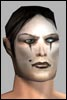
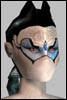

| Pages (14): « First ... « 11 12 [13] 14 » |  Last Thread Next Thread Last Thread Next Thread  |
| Author | Thread |
| Feydrutha Leetas Registered: Dec 2001 | soloing and mission bosses and other stuff of course i have not read the whole thread, just some posts here and there (hey, i'm not getting paid for this)... I have a few things to say first: multi level missions with mission bosses. Sounds great! One thing to be wary of though.. what if my team takes a mission, stampede's through two levels of dungeon, reaches the mission boss and gets smashed.. i mean what if the mission is doable but the big boss just isn't doable? It's ok if my team gets defeated by the boss.. so long as trying again with better organization will eventually have us prevail.. otherwise it would be really frustrating.. right now you usually know whether you can do a mission or not in the first multi-mob room.. which is good defense from frustration.. So, this works if team organisation does make a difference, and if the boss is not too uber.. also i think the situation in which combat occurs should provide some room for strategy, meaning: - it happens in a big room, so rooting, slowing etc can be effective - there are one or two henchman that can maybe be pulled to fight them separately, or pacified while the boss gets killed, or maybe one of them will die before the team dies/flees making the next atttmpt more reasonable... ok another subject (this one is more of a rant): i think team missions, as soon as they come into the game, however they are, and especially if they are fun, will make the "my class can't solo" problem a lot less serious. Meaning you will be able to get tokens, equipment, money by doing group missions and not need to spend your time soloing missions if your class takes forever to kill a mob. (btw replace the word class with profession.. we don't want to be fantasy now do we?) What i mean is yes all classes should have some ability to go solo.. on the other hand some classes are obviously more solo oriented than others, from their structure, not from game balance issues, and i don't think there's anything wrong with that.. I mean one of my chars is an MP and i created it expecting to solo, the other one is an NT and right out from the start it was planned as a group character.. of course it would be annoying if my NT could not solo a low difficulty mission if i really wanted to, but that's not how i would want to spend my time with that char... you expect pet professions to be good at soloing and DD professions to be capable of some soloing through tricks such as rooting or slowing opponents to nuke them.. resulting in quick death of the nuker if something goes wrong but still a viable option with some care. Doctors should feel lucky about how much they can solo in this game.. in EQ not only clerics can't kill anything, but they can't even get anywhere without some other class's help. |
 January 24th, 2002 02:17 January 24th, 2002 02:17 | #241 |
| Heart of Evil Leetas  Registered: Dec 2001 | The pain of solitude... Here are my issues on what -NEEDS- to be fixed to improve the solo-ability of the game. These are only the things that I have noticed, there may be others or my opinions may be off the mark. Regardless, this is how I feel. The ability to solo the game, -IS- something that needs attention. Not every monster should be solo-able by every class/species or level. Some should only be able to be fought in a team. My list: 1) Base solo mission rewards primarily on the characters who are getting the missions. For example, a Nanomage Nano-tech should have less of a chance in generating a mission that give a 'Edgeless Support Beam'. 2) Increase the quality levels of the mission rewards to reflect the fact people will only rarely want an item that is in most cases well below what they are able to equip. For example, MP Pets, which are generally of a quality level above (or well above) the level of the MP. 3) Increase the quality levels of what is sold in the stores and perhaps lower the prices. As a person who plays an MP who is nearing level 100, my only options are to get a group to do solo missions for my nanos or pay 2 million for -each nano- on the shopping channel. Not everyone has the luxery of high level friends who will run missions or give out older equipment. 4) Lower Mob health levels so that they are realistic. 5) DO NOT change equiping guidelines. Get rid of or fix the few things that make -crazy- overequipping possible, but not at the expense of driving away customers or serverely damaging the only way to solo this game. |
| January 24th, 2002 02:33 | #242 |
| Aurorae Leet  Registered: Nov 2001 | Enhanced Enemy AI: Hmmm, personally I like the idea of enhanced enemy AI. Let me just state the obvious up front though, as soon as you make the enemies smarter or just act more realistically you will have segments of the population screaming that their character has been "nerfed". For example I currently see posts screaming about npcs "chain healing". Now this strikes me as a completely reasonable tactic for intelligent enemies to use. If it is something the players would do or try, then an enemy that is supposedly as smart would try it too. However, when the enemy does it, people complain. Enhanced AI and the Doctor: Now look at one of the most logical things to happen with an enhanced AI - painting a bullseye on the Doc. The simple fact is - it is what players would do. If the enemy is (in terms of the game context) smart enough to recognise what a healer is and what it means, then they would try to take them out first. The only reason they wouldn't is if there is an "in game" reason not to. Real life example would be Geneva Convention and the like. Wouldn't work here though because it must be binding on both sides and the morality/authority guiding a majority of players is non-existent. So it would need to be a more concrete reason. Lowering aggro modifers on healing and the like are all artificial fixes though. And to this end, here's my idea. Issue all docs a specific NanoFornula on Graduation. Something along the lines of a Nullity Sphere in concept, absorbs damage equal to Doctor's HP from EACH AND EVERY attack (this includes the Doc's own attacks) and only allows Doctor to cast healing nanos while it is in effect, perhaps prevents movement as well (can't have Doc's being invulnerable in everyday situations). So we now have a situation where the Interplanetary College of Physicians (tm)  have removed all offensive capabilities of their members while letting them do their job. The enemy now sees a Doctor on the field of battle, they aggro on him, if the Doc has taken advantage of his "non-combatant" status they fail to hurt him, their aggro on him is then wiped and they retarget the combatants. While the nanoformula remains on, the Doc is removed from the target list. Drop the nano and the Doc becomes an available target again. If the doc wants to be a combatant and cast DoTs or shoot, then he must forego his protection. have removed all offensive capabilities of their members while letting them do their job. The enemy now sees a Doctor on the field of battle, they aggro on him, if the Doc has taken advantage of his "non-combatant" status they fail to hurt him, their aggro on him is then wiped and they retarget the combatants. While the nanoformula remains on, the Doc is removed from the target list. Drop the nano and the Doc becomes an available target again. If the doc wants to be a combatant and cast DoTs or shoot, then he must forego his protection.Such protection should NOT be available to any other class and for the record, I do not play a Doctor. On Teaming and Different Professions: Don't give the same abilities to all classes. Keep the specialization. The corollary of this is that each profession must be capable of doing what they specialize in. Skills, nanoformula and damaging capabilities that don't work would need to be corrected. Easy for me to say, Funcom the one who has to do it. Sorry FC. Can Everyone Team: As others here have said, the problem I've seen with Teams are a lack of co-operative skill and communication on the player's part. It's not a failure of the character design. Downtime and Socializing: Current downtime is good. If people want to talk while hunting then they just need to slow down. Now I like the idea of social hunting, take down a critter, sit down, slap on a bandage or two, re-align the actuator on the 'bot, swap tales about the one that got away, down a few beers and go looking for the next beastie. But all the groups I've teamed with have all suffered from an underlying feeling of urgency. Barely have time to sit and use the treatment kit before some hyper soldier or enforcer is racing off after the next target. Just relax people, it's not like it's a game or anything .Boss Monsters: Again I like the concept. Only thoughts I've got on this one are to do with spawn locations. Makes no "in game" sense for it to spawn in the middle of the group. Have it appear at the edge of visual range, heading towards the team. aggro locked on the team so it is not distracted by some poor joe just wandering by (unless he tries to shoot it). This gives the group a chance to use tactics etc., and means they have to keep alert. It would provide a natural benefit to any true team (ie. one that is not just a group of solo players). And that's about it. Thank you for reading this far. Aurorae Neutral Mechanic from Newland City RK1 |
| January 24th, 2002 03:39 | #243 |
| Daltrade Leet  Registered: Jan 2002 | AI and Doctors Doctors, Medics and Officers were the no. 1 target in the Viet Nam war. In the real world the U.S. is one of the few following the Genenva Convention. |
| January 24th, 2002 07:02 | #244 |
| Ejeckted Supa Leet  Registered: Nov 2001 | Re: The pain of solitude... quote:not sure if this is the right thread for this, but i want to add a footnote here: I defend overequiping, which i just call optimization, endlessly on these boards. It is the single best feature of AO and probably the only reason I am still playing an otherwise tedious game. I love having several different implant sets (eg. one set to put armor on, one set to put weapon on, one set to put belts/ncu on, and finally one main set for combat) and I love having to arrange buffs from 2 or 3 different people and getting wierd unique items or items that would otherwise be junk if not for a cool modifier and seeing how i can incorporate that into the math . . THIS is AO for me .. not mindlessly banging away on mutants. . HOWEVER there is one problem with the system that must be fixed (if it has not been already). "Implant-Stacking" is installing implants 'on top of eachother' resulting in being able to use implants you otherwise couldnt, due to the check for requirements being made before the swap is done, so players are actually able to keep stacking implants over and over again and this is an *exploit*. please note: I am not referring to using an implant in one body slot to equip another implant in a different body slot. that would be legal. I am only explaining the bug that allows (for example) a strength chest implant to fulfil the requirements for another strength chest implant which i turn allows you to install another higher strength chest implant etc etc etc. in combination with doing this for body requirement and treatment implants the results are an uber twink who then 'owns' everyone and gets the people who dont know about this exploit shouting for nerfs of all types of overequiping. maybe this trick is fixed already .. dont know .. i dont use it. again, the way to balance casual vs hardcore players without losing all the players who love AO for the numbers-game is to make the ATK rating more influential in determining damage and the QL of the weapon less influential. that way the guys who put in the most time and effort can still feel optimized without totally steamrolling over casual players and the mobs designed for casual players to be able to solo. ( see, i made this post relate to the topic  ) ) |
| January 24th, 2002 07:29 | #245 |
| Askeladden Soleet  Registered: Nov 2001 | Hei Gaute As many posts has allready stated. Forget the lvl 1-80 for now, soloing and teamwork works ok there. Take a look at your lvl 80-200 players, thats the players who need your help. I'm about to quit the game, i dont really want to but I see few reasons to carry on playing. Here is why. I'm a lvl 107 adventurer, clan, playing on RK1. Im a member of a active guild. I wear armor 45 ql above my lvl, i have maxed my weapons skills (and i wield guns that i can self buff to use, currently ql 150ish assult rifles), i have pretty good evades. My heals and morphs are about the same ql as my lvl (nano skills are a bit gimped *hehe*) Soloing: As most of the players at lvl 100+ i cant solo. I can not do a 50% mission. Hell, 3 greys in the first room would kill me in a few seconds. Most green mobs i cant defend myself against, i guess i can kill 1 in 10 of the green mobs i fight. So soloing is not an option for me. I dont see the point in doing 30-40% missions : no token, and loot i have no use for. Teaming: If you want to find any lvl 100+ player, then you go to city of Home. Here they all are, teaming up to do hard missons. Why Home? Well, the scanner is close, the missions are close and all missions have the same layout. The are few docs available at lvl 100+ , so most teams have no doc. This is not a huge problem since adv, MA and others can heal and the mission areas in Home have so called "safe rooms". So a group of lvl 110-120 players do ql 170-200 missons. Good xp and good loot. Most players stay in Home most of the time, the few times they do missions outside of Home is when they got a mission reward they really need. Then SFH, PM and tlr is visited. If a lvl 110-120 team want to hunt outdoors they go to Mort and hunt borgs. There are no other place to go, Medusas in EFP was ok, but not anymore. Try and find a lvl 100+ player in Old Athen, you will be looking for him all night and you may not see one. Thats it. Teaming at lvl 100+. Sad but true. So, im basicly board, not much to do for a lvl 100+ player. So we would like FC to help us out. Give us more options, give us something to do. |
| January 24th, 2002 09:22 | #246 |
| Tjohei Just real old  Registered: Nov 2001 | Back to normal social RL life? :) After several months playing AO I have suddenly reach a point of frustration that I dont manage to hold back. I start playing my main character in august-2001. Now soon a ½ year later I have reached a kind of sadness. There is no fun left in this game. So I am agree with u Askeladden. It is suddenly so boring that it is hard to imagine. Most of the high level players make new characters. I think it is because of the lack on hunting spots and the problem on finding other at the same level to team with. I am a player on Rub2. It is sometime scary empty on higher-level characters that u can play (team) with. And I have a feeling that it is going to be worse. There are so many that have quit AO lately. Some guilt mates and some other I have known well during my AO-time. I am also considering doing the same. And the main reason for that is the lack on interest from FC. And the anger that grows when you have used so much time on this game and they ignores your question. The whole time I have been reading and posting to this AOBB, I have not yet seen any question answered if there be some critics against FC in it. They always come with general answer, without any real answer to the question. If they bother to answer the question at all! And the whole AOBB is full of customers who beg to be heard. One patch can make a life ruin for one profession. But in FC they dont see it that way. And PvP is prior number one, as I can understand. I have no special feeling on PvP. And the reason for that is that I dont do it. I have posted all over this AOBB. And I have not yet get one question on any of my questions. And I have seen that CZ have a rate on 2,6 posts each day. The other main char on posting has nearly 6 posts. Wow that is less then I can manage. And they can even use cut&paste answers. I must write each word. And I have found my self doing reading and writing here more of the time then actually playing it. How come? Well, because I am hoping that they will do something for us. But now I am just thinking that they might not do so. So what then? I was hunting the temple near TIR. That spot was removed as a good hunting spot because of some stupid amnesty. After that I had a period in 20k. Then we went to EFP and hunted medusas. Suddenly that also was removed. Now I can go and hunt in Cyborgs in Mort. Not the same goldmine as the medusas. And it is so overcrowded. First time I was there it was just one team and another was looking bye and went. Now there is lot of teams hanging around you. And we have the BS home, where you can do single missions in team. That is about it. Wow that is excitement!! As all the other higher then level 100, I have also started a new character. But it is not the same. It is during my main character I do know people in Rub2. And a game should have more then some months future on development in a character you made. As a soldier in AO, I feel that every patch is trying to steel some of the few advantage there is to be a soldier. That is also something I am not able to get an answer from FC about. What will happen with the balance between other professions and the future for the soldiers? So I give AO some weeks. If not I just quit. Because I see no reason to continue, when the one you are a paying customer to dont pay you any attention. Aimabel Soldier Rub2 |
| January 24th, 2002 10:36 | #247 |
| Mountain King Leet Registered: Feb 2002 | Reply to Soloing Article First off let me say that Anarchy Online in its current incarnation before level 100 is flawless, well maybe not flawless but much better than any previous experiance i've had in all other MMORPGs (and i've played damn near all of em). But alot of my higher level friends are saying that post 100 the game is either far too easy and tedious (repetative) or way way way to hard (15 minutes plus to take down a light green) and that is why i am in full support of adding "Boss" type monsters to the game. Those that reach the high end need something more than the option of either buffing/helping out lower level characters or rerolling characters themselves. The addition of Unique creatures/areas to the game might ****e up the high- end game ( in the same way that Dragons and Planes ****ed up everquest) As long as funcom doesnt make the mistakes that verant made in implementing these boss creatures i.e. it taking 60 plus people of max level to survive the encounters, then i feel the addition of unpredictability and danger starting at around level 50 or so mobs would be a wonderful welcome addition. Also i feel it might benefit the game in general to add more mission types or perhaps even multi-part missions. Although i LOVE the mission system and feel that is the most innovative and shining point of AO (aside from a actual evolving storyline) there needs to be more variety, more enviroments, and definitely more challenges than the 3 spawn main room theme that seems to occur in EVERY mission. Perhaps adding traps (that'll up a fixers/agents value in dungeons) or maybe security systems that have to circumvented i dont know...anything to make the missions seem more like covert/secret work than busting through the front door with guns blazing.. Well i think i have said more than enough, but i just want to finish by saying that Anarchy Online is by far the most creative, innovative, entertaining, atmospheric, and well designed game of its genre (now that its properly patched) . Keep up the Good work and thanks for listening! |
| February 6th, 2002 10:37 | #248 |
| demoniodojo Leet Registered: Feb 2002 | I have been playing anarchy online for 3 months and i think that the anarchy online pvp system can be inproved. I used to fight in games like ultima online where you can fight with every one and everywhere(only safe in the city). The Anarchy online game will be boring in two months when i reach an high level an discover that the pvp system is too closed of mind. The ideal pvp system is fighting with the same level as the actual pvp system but in every place. Only safe in citys where the guards would make their work if you are from different faction. The only possible fight if the opponent is from different faction. If same faction character want to fight they would be able to do it in the arena or places like metmedere. I think that this pvp system would improve the players relationship and the game fun. Only killing monsters is boring if you want to reach high levels. Theres a lot of players that leaves anarchy online for that reason. The enjoy finishes when you cant use your powerfull skills against other players. (i fact i will leave anarchy online if the pvp system doesnt change) Thanks for reading this. |
| February 6th, 2002 11:17 | #249 |
| Desbet Eleet Registered: Feb 2002 | Tactical play? uhu? While honestly I've not been playing as long as some I have been able to notice something more than alittle glaringly obviouse. You don't need to use tactical thinking to win any situation it most always comes down to a simple formula. my.damage.potential > target.damage.potential and that, (saddly this means that AO) becomes booring.. Throw in some armor and you might just confuse a PC for a moment but can then easily counter. NPC's or monsters are simply cannon fodder if you know the potential of the thing you want to hurt. (and thus don't chose one you can't handle) special moves, brawl fast attak diamatch or sneak attack are a part of your ability to damage (and i honestly think its unbalanced in favor of the melee folks out there); with ranged weapons you can get afew extra shots in with fling, burst or auto. (woe unto you if you use rifles with only aimshot (psst! havn't seen a good hit with that one yet, and it can only be used once!)) blah, anyhow. There is no reward for the agent that sneaks onto the hill overlooking the exit from the clan fortress hoping to snipe some folks with his supierior stigma rifle, aside from afor mentioned single aimed shot. sneaking can take you there, sniping can get it started and then best hope you're damage potential is high enough or the wounded soilder and his doctor/nanotech buddies will come stomp you. reason for team play, increased potential, three guns better than 1. There isn't any need to think in a team conflict aside from knowing what you're good for. doctors heal, (if there was an enforcer idiot enough to 'forget' to push up his firstaid skill), warriors kill....... sigh To make the game fun, for the long term fun i mean... there need to be some thinking battles. And GET RID OF THAT SILLY AUTO-ORIENT thing. You know where someone attacks you and you turn to face it. Man, just with that alone gone, sneaking has its rewards, NOW if only a sniper could hide again after getting off a shot.. a-la the real world. Features I think I'd like to see? Knockback from heavy physical blows. Concussion effects (that weaken psych) Or EMP attacks that nullify nano's. I'm talking about things that will cause you to have to think about what to do! and not religh on your average dammage per attack to finish the war. And those are just the new -things- ... some of them. I'd really love to see an NPC attack and duck around a corner. Desbet, agent (optifex) "Now you see me, . ... hey! @#$ Now you still see me...." dimmension2 |
| February 6th, 2002 12:25 | #250 |
| Noe Soleet  Registered: Nov 2001 | test? I could not post here previously, is this still the case? *** edit - arrrrrrr, it is very very disconcerting when a game developer that places such a high amount of importance on their online presence and feedback utility through means of a forum, then states for people to give their comments on a piece of communication only to then see that medium unavailable for 2 WEEKS. Sorry, pet peeve. I am a webmaster and network engineer and things things get on my nerves. Don't yall use Dev machines to test? Sorry, I am not trying to be acerbic, and I know that ur webby's were probably scrambling like mad to fix the problems, but Jiminy Crickets!!! COS, CZ... POST APOLOGIES when vital avenues for communication are unavailable! ***************************** I beg your forgiveness, you DID post an apology, my Bad! sorry Last edited by Noe on February 8th, 2002 at 06:24 |
| February 7th, 2002 01:35 | #251 |
| Noe Soleet Registered: Nov 2001 | What I would have liked to have said is this: Why is there not a sister article entitled Soloing and Soloing? A large number of us bought this game because of what was once posted on the index.html URL that this game would a perfect game for those who only (and I remember this being written almost verbatim) "have a half hour can find plenty" of enjoyment, or things to do or something like that, with specific reference to the missions system. It's the MAIN reason why I quit Asheron's Call. Where epic journeys were required to do anything that would be remotely called "fun" I LOVE AO. Don't get me wrong. But I do NOT find enjoyment in spending 2 hours doing one "small" mission. And by a lot of accounts, as of today (patch 13.6) things apparently have gotten harder to complete missions (ie, chain casting NPC's, etc) GRRRRR. ACKNOWLEDGE and PLEASE!!!! ADRESS that this game currently does not support a "Casual" gamer unless you enjoy rerolling every week and sticking to noob missions. PLEASE! I do NOT like being forced into grouping because otherwise it is like dental work to progress my character. Last edited by Noe on February 8th, 2002 at 06:25 |
| February 7th, 2002 01:50 | #252 |
| Kaisersoze Leet Registered: Feb 2002 | Awww guys come on... For everyone who needs to be fixed, tuned, whatever... Be patient; let's stop arguing (at least for the ones who want to) about who needs the fix first. There can be reasons why some folks have been pushed back. Ok now before I really start... MrBunny, you are a real dull bumbf--- who thinks he can read everybody's mind, that 'hardcore players' are highly educated geeks who can teach things to ignorant people such as Gaute. Wow you are soooo special. Anyways... /IGNORE MRBUNNY Now. I play only adv so far - I always wanted to have FUN (not power... right, MrBunny?) and some unique class, which is apparently what FC aspires to. I was interested in playing Fixer for being the kind of guy ppl want to contact in some bar along dark alleys to buy some burning info, or some prototype of weapon, or anything else illegal - able to make falsified papers being able to cross some ; avoiding police forces, keeping your head down, get some more illegal stuff go past customs, getting some friend who's in deep trouble with the law - federal scale or whatever - come through borders in safety through deals, having uuuh syndicate 'friends', links to gangs etc. You know... I was also interested by agent for the spying thing. Working for omni or clan, or just some little corporation, looking for what your opponent is up to, getting the info (and then giving it to fixers at a price if you're not too loyal to your corp or if you freelance a bit etc ) from within, disguise etc. I liked MA for my vision of simply being a spectacular fighter - doing it as an art ya know; and reach the ideals of whatever kind of martial artist has (rough ideas could be samurais or ninjas - they both have different ways etc - I'm not learnin' ya anything there ) I was also interested by the adventurer - most interested by that one - maybe arguably the fixer. I was seeing myself wandering in the woods, defending nature etc; a survivor, nature being my ally, try to make forest grow back, help lost travellers (as myself, but being more a traveller of the natural sites, not of the road), chase away entities destroying voluntarily or not nature (like try to prevent cyborg basecamps and such), being in touch with tribes, and so on. Like a Ranger, a form of druid and warrior. I imagined a lot of extreme drawbacks and such, but I was just letting my dreams go wild. I really do like Anarchy Online and understand it might have been too much work to create a world such as this with a lot more of NPC-to-PC roleplay, or just even find a way to get an almost omnipotent PC-to-PC roleplay, and I guess it is already a lot of work to have a balanced game; but I have a big reproach: the game tends too much on the hack and slash. It seems that many people just want to level and so on, and that despite of the idea of the pvp conflict, there is no dialog or rarely a thought of fighting for your side, it's just camping the political areas and think "man I haven't seen an 'enemy' show up. I really wanna get my new title" Stuff like that. Keep in mind that I am just making a generalisation - heck for what roleplay purpose would we be fighting each other in Meetmedere or Mort etc?But enough of my initial idea of Anarchy Online. I might as well help FC come forward by just giving out what I think could make the game a worthwhile experience etc Like I said let's stop for the one who are arguing who needs to get fixed first. Fixer: you might have been pushed back because FC needs much more time with working on the grid etc. Maybe they making up a whole 'illegal underground network' for you; I dunno. Agreed, you have been granted a few little bones tossed at you to buy a bit more patience as is what they did for the Adv's (which I am right now) by fixing the morph can't fit door thing and creating a few new weapons as adv wear only. We (adv's) have been pushed back too; maybe it's because they are working on creating a whole line of pets or wild area influence vs urban area influence on us - who knows? Maybe they suddenly will fix agents before adv's because they really need to fix 'em first to better fix others thereafter - don't know. I'm just sick of moaning and bitc... uuuh woofing at them for not doing anything for adv's. Might as well help them go further quicker with feedback on what they want to edit in their schedule. I'd like to keep on going in this post but it will be too long; I'll make a new one a bit later. This post was made just to say "hey I'm a bit disappointed in some things in the game, but I'm gonna help you out" and also to say "dudes give em a break". Keep in mind: a whole lot of us post many times a day. There is only Cosmik and Cz to check them out. Oh actually FC, maybe it would be good that you try to lay your hands on a dozen ppl to check the threads easier? |
| February 10th, 2002 12:49 | #253 |
| CulannHS Soleet  Registered: Jan 2002 | No..the last thing we need to give FC now is 'a break'. They have had months and months on end extending back into the betas to fix these issues, and they persist in not taking care of critical issues while doing frivolous things instead. I.E. making new backpacks instead of fixing things like the team health panel so it reads accurately, etc. They do not need a break. They have had, in all actuality, way too much leisure time as it is. They're product is hanging on the line and only barely at that. Neocron is extremely promising by comparison, and not nearly so one or two dimensional as AO is. FC keeps alienating players by screwing up or moving forth with parts of their game or story, and not regarding player interest or like or dislike. A prime example is Mort. The clan alignment has basically lost a profitable hunting area due to this, and we're not real happy. It's also obvious after the petitions, after the feedback and complaints and such, that FC really doesn't care if the clan population is upset or not, they're going to go along with their little story and to hell with the clan players in the meantime. In short, FC has had plenty of chances to fix things, plenty of time to make corrections to things. They are simply not doing so, or their idea of a fix is even worse than the original problem, indicating they are incapable of resolving technical or game issues with any sort of intellectual logic. They routinely go against the wishes or interests of the players on a regular basis, and let's not forget sexual harassment openly from FC in a number of places. Culann, 103 NT waiting on NeverWinter Nights, Neocron and SWG to wave g'bye to the MMORPG disaster that will be called AO. |
| February 10th, 2002 13:12 | #254 |
| x-genesis Eleet Registered: Feb 2002 | I must STRESS that the downtime in other games is so prohibitive as to make the game tedious and boring. in EQ for example the downtime for casters in the higher levels is so outrageous it makes things boring. I found I needed to keep a palm with games on it handy to keep from going mad. I realised I was playing games while i was playing my game. Please don't change the downtime in AO. it keeps me engaged and interested as well as immersed in your world. I found it one of the selling points of the game. |
| February 11th, 2002 06:15 | #255 |
| x-genesis Eleet Registered: Feb 2002 | soloing In most mmorpg's soloing is frowned upon. EQ created a solo class, damned them for soloing, and made then unnatractive to groups. I find I LOVE to solo. What can i say, sometime I just don't have time for teams, socialising, and trying to bring order to chaos ("let's wait here until we're all buffed and ready" ..."Ok, i'll just go without you...help im in trouble!!") When I seek the social fix, there are clubs, the usual meeting points (omni ENT bronto burger, etc etc) and sometimes I do indeed love to group. The bottom line is, THE CHOICE IS MINE. That's something I truly appreciate about AO. You GIVE us that choice, and don't penalise us for making it. Leave it be, we're happy. Soloers solo, groupers group, and leets ..um leet. thank you! |
| February 11th, 2002 06:24 | #256 |
| Maitrize Soleet  Registered: Nov 2001 | Re: Ability for more team members quote:Lag. |
| February 11th, 2002 18:48 | #257 |
| Isoldei Eleet  Registered: Feb 2002 | I just wanted to give my little bit of input and since this does hve something to do with some issues discussed in your article i felt this was an appropriate place to post. Its is impossible for some players to solo and gain xp or money. I have trouble much of the time although it varies at diff. levels. True i am a MA and we seem to be notoriously weak but this is happening to many other char classes esp since the patch. I am doing ok at the time and have to admit to being a less than average player. My issue is that at my level the people (80-100) I have been teaming with are dropping like flies. They have either gotten tired of not being able to solo missions when necessary (non-pet classes especially) or have become bored because there are less hunting places, and there are simply less folks to team with. Alot of the fun that was lvl 30-70 is past - no fun excursions. Many missions are located in areas which are truly too dangerous to go to for some classes. In the last week most of the players I used to team with have either quit due to bugs (ie 2 million cred worth of implants gone from inventory and nothing can be done) or due to the lack of fun compared to frustration. Others have started new chars in hopes that a change will improve interest. Well I want to play my char no matter how broken and mishandled she is. I dont complain alot about the fact that I cant hit for any damage worth anything when others crit finishes them off in a team. I know MA is considered weak but i like it - it is what i wanted to play. Anyway . You are losing players - more are quitting the game than starting new chars and I know soon I will too if I have nothing to do because I cant solo missions (or get to them alive in some cases) and noone wants to team with me - or there is simply noone left. I dont do PVP - why would a new player MA do that - I am trying to have fun and see no point in fighting someone who will kill me in one -2 hits. its no challenge for them either - don't know why they insist on camping grid at MMD to kill players like me. I guess it makes them feel strong. Anyway - listen to the players - I run into this talking to people throughout the game - people are leaving - it's a game with potential - i am addicted - but please make it possible for people to continue having fun. Create some hunting areas where teamwork doesn't feel like camping to all but the puller. I miss the temple and bot mountain, we moved, we chased, we had a sense of danger while also having success. Yes some things are high reward / low effort and I dont expect that - but i want it to seem possible - balance it . Thank you. Hope all improves - I am holding out for it . |
| February 11th, 2002 19:44 | #258 |
| Origosis Leet Registered: Feb 2002 | Well one thing is Cooperative should have a few restrictions... Let me explain. When you coop all tat happens is the amount of xp is cut 1/2 or less, and you get to share it. great way to level up real fast is get 6 people all going solo, but in a group. There should be restrictions. You only get XP from the kill if you assisted in the kill. in what ever way.. if you were healing those fighting you should get equal XP, buffing, etc.. Also the money from the kill, at the teams discretion should be splittable upon looting. as fr item.. maybe they can be marked with a "team icon" so that when sold the money is split with the team.. another idea upon this is a loot rotation a forced list that loops whoever is on the top of the list gets to loot the corpse. A turned based looting if you will..... ok i sounded too wierd in that last sentence.... anyways! Personally I believe that though some tweaking will be good for the team based game play the mst important thing would be some restrictions added.. though this may disconcern some from using it, it will "force" (this word is a little harsh, but it works.) again i say Force the team to act as a team, the xp rule. other things can be done of course such as forcing the team based areas to have multiple NPC's attacking one person, or team rather. most areas i go into despite settings i can have 3 in the vicinity and they will only take me one at a time.. sometimes with time to heal myself right infront of them. If you force "Trains" as they say in EQ (you knw EverQ....") then this will once again "force" a team to work as a team. there are plenty of things that can be developed to make a person want to team, but the team will quickly loose it's lose it's key asspect if everyone just goes around soloing the entire area. some of these rules and pluses could be missioned based constrictions, also some can be team selectable, and of-course game forced. Look at the success of other MM games. it's not in their pluses it's in what makes the game challenging! Well tat's about all i can muster up i have a few ideas for "pluses" and "tweaks" but i believe this is the best approach. |
| February 14th, 2002 18:44 | #259 |
| Flapsie Supa Leet Registered: Dec 2001 | "another idea upon this is a loot rotation a forced list that loops whoever is on the top of the list gets to loot the corpse. A turned based looting if you will..... " Is it "/Team Loot Alpha" u mean ???? |
| February 15th, 2002 00:27 | #260 |
| Pages (14): « First ... « 11 12 [13] 14 » | The saved copy (Funcom's forum archive, saved by the Wayback Machine in 2025) |
All times are GMT.